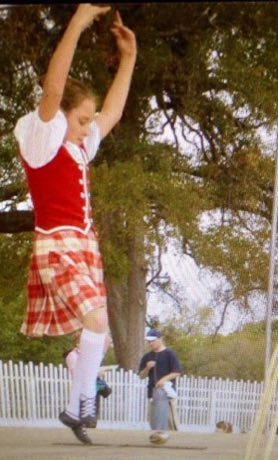
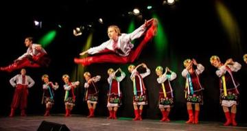

Home / Living Traditions / Celtic and Atlantic Europe
Playable heritage gameHighland Sword Dance
Also known as Gille Chalium
In the Highland sword dance two swords lie crossed on the floor and the dancer, in kilt and bonnet, steps in the four spaces between the blades and springs over the cross, keeping time with the pipes without touching the steel. The arms are held high in an arch and the toes are pointed.


How to play
- Two swords lie crossed on the floor. The four spaces between the blades, and the cross where they meet, are the five places: Back, Left, Right, Front and Cross.
- A ring closes on a place when the foot should land there. Tap the place as the ring closes and the dancer steps into it.
- Cross is the spring over the blades. Start with the four quarters, then try the quick step.
Rules at a glance
- A tap right on the beat is perfect, a near one is good, and taps with no ring open cost points.
- Each pattern is played twice through, in groups of four beats.
- Patterns are simplified teaching figures in the style of the dance, not a competition set.
About the tradition
The dance is performed at Highland gatherings and competitions in Scotland and by Scottish communities abroad. It is shown here as dance and skill, never as real fighting.
Origins
A living tradition passed from person to person; it is not tied to a single dated origin. It belongs to the cultural world of Celtic and Atlantic Europe.
Credits
- Photo: User:Abbykmac, CC BY-SA 3.0, source on Wikimedia Commons
- Text: CC BY-SA 4.0, World Heritage Games.
Sources

Get the app
Highland Sword Dance is one of 12 folk dance rhythms in the Folk Dance of the World app for Android. Submitted to Google Play; in review. Store links appear here the day it goes live. One app, many traditions, no account needed.
More games to play




More from United Kingdom

Antigua Classic Yacht Race
Antigua and Barbuda +1 · Racing
Bagatelle
France +1 · Dexterity and skill games
Bat and Trap
United Kingdom · Dexterity and skill games
Blacksmith's Forge
United Kingdom +4 · Crafts and makingPlay preview · in the Woodcraft & Metal of the World app
Bridge Stick Race
United Kingdom · Toys
Broderie anglaise
United Kingdom · Crafts and makingPlay preview · in the Stitch & Thread of the World app